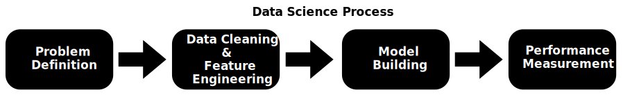
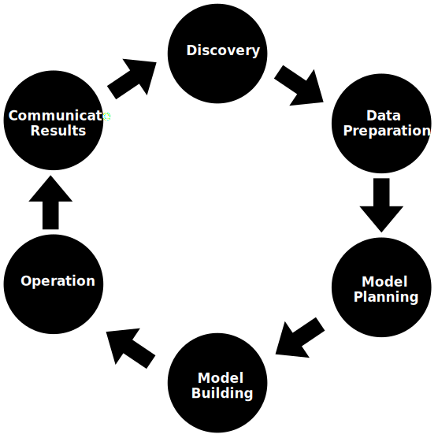

Introduction to Data Science
What is Data Science?
Data science is a field that involves using scientific methods, processes, algorithms, and systems to
extract knowledge and insights from structured and unstructured data. It combines expertise from various
domains such as statistics, mathematics, computer science, and domain knowledge to analyze complex data
sets and solve real-world problems.
Relationships and Intersections in Artificial Intelligence, Machine Learning, Deep Learning,
Mathematics, Statistics, and Data Science
- Artificial Intelligence (AI): AI encompasses the broader field of creating intelligent systems that can simulate
human-like intelligence and behavior.
- Machine Learning (ML): ML involves the development of algorithms and models that enable computers to learn from
data without being explicitly programmed.
- Deep Learning (DL): DL is a subset of ML that focuses on artificial neural networks and deep architectures
to
model complex patterns and learn representations from data.
- Data Science (DS): DS involves the use of scientific methods, algorithms, and systems to extract insights
and
knowledge from data.
- Mathematics and Statistics: Mathematics provides the theoretical foundation for algorithms, optimization, and
modeling
in AI, ML, DL, and DS. Statistics provides methods for data analysis, inference, hypothesis testing, and
predictive
modeling.
Data Science Components
- Machine Learning (ML): ML algorithms enable systems to learn from data, make predictions, and
identify patterns without being explicitly programmed.
- Deep Learning (DL): DL is a subset of ML that focuses on neural networks and hierarchical
feature learning, used for tasks like image recognition and natural language processing.
- Big Data Technologies: Big data tools and technologies such as Hadoop, Spark, and NoSQL
databases are used to handle and analyze large volumes of data.
- Data Visualization: Data visualization tools and techniques help in representing data visually,
making it easier to understand and interpret insights.
- Data Preprocessing: Data preprocessing involves cleaning, transforming, and preparing data for
analysis, ensuring data quality and reliability.
- Statistical Analysis: Statistical methods and techniques are applied to analyze data, derive
insights, and make data-driven decisions.
- Business Intelligence (BI): BI tools and dashboards provide interactive visualizations and
reports for business users to monitor and analyze key metrics and KPIs.
- Predictive Analytics: Predictive models and algorithms are used to forecast future trends,
outcomes, and behaviors based on historical data.
- Natural Language Processing (NLP): NLP techniques process and analyze human language data,
enabling applications such as sentiment analysis and chatbots.
- Cloud Computing: Cloud platforms and services facilitate data storage, processing, and analysis,
offering scalability and flexibility for data science projects.
Data Science Job Roles
-
Data Scientist: Data scientists analyze complex data sets to extract meaningful
insights and patterns. They develop machine learning models, algorithms, and predictive
analytics to
solve business problems and make data-driven decisions.
-
Data Engineer: Data engineers design and build data pipelines, databases, and
data
infrastructure to support data analysis and machine learning projects. They ensure data quality,
reliability, and scalability.
-
Data Analyst: Data analysts interpret data, create reports, and visualize data
trends to support business decision-making. They use statistical analysis and data visualization
tools to identify patterns and trends in data.
-
Data Architect: Data architects design and manage data systems, databases, and
data
warehouses. They develop data models, schemas, and architecture to ensure data integrity,
security,
and accessibility.
-
Data Admin: Data administrators oversee the maintenance, security, and backup
of
databases and data systems. They manage user access, troubleshoot data issues, and ensure data
governance and compliance.
-
Business Analyst: Business analysts bridge the gap between technical data
analysis
and business objectives. They gather and analyze business requirements, translate data insights
into
actionable strategies, and collaborate with stakeholders to drive business decisions.
-
Data Science Educator/Trainer: Data science educators or trainers teach and
train
individuals or teams in data science concepts, tools, and techniques through workshops, courses,
and
online training programs.
Applications of Data Science
-
Internet Search: Google search uses Data science technology to search for a
specific result within a fraction of a second.
-
Recommendation Systems: Data Science is used to create recommendation systems
like “suggested friends” on Facebook or “suggested videos” on YouTube.
-
Image & Speech Recognition: Speech recognition systems like Siri, Google
Assistant, and Alexa, as well as image recognition on platforms like Facebook, are powered by
Data Science.
-
Gaming world: Gaming companies like EA Sports, Sony, and Nintendo use Data
Science to enhance gaming experiences, develop games using Machine Learning techniques, and
update games dynamically based on player interactions.
-
Online Price Comparison: Platforms like PriceRunner, Junglee, and Shopzilla
utilize Data Science to fetch data from relevant websites using APIs for online price
comparison.
-
Healthcare Analytics: Data Science is used in healthcare for analyzing medical
records, predicting patient outcomes, personalized medicine, and optimizing healthcare
operations.
-
Fraud Detection: Banks and financial institutions use Data Science to detect
fraudulent activities, identify suspicious transactions, and improve security measures.
-
Social Media Analytics: Social media platforms leverage Data Science for
sentiment analysis, user behavior analysis, targeted advertising, and content recommendation.
-
Supply Chain Optimization: Data Science is applied in supply chain management
for demand forecasting, inventory optimization, logistics planning, and supplier relationship
management.
-
Energy Management: Energy companies use Data Science for energy consumption
analysis, renewable energy optimization, predictive maintenance of equipment, and grid
management.
Challenges of Data Science Technology
-
A high variety of information & data is required for accurate analysis: Data
Science requires diverse and comprehensive data sets for meaningful insights, which can be
challenging to gather and analyze.
-
Not adequate data science talent pool available: There is a shortage of skilled
data scientists and professionals with expertise in data analysis, machine learning, and
statistical modeling.
-
Management does not provide financial support for a data science team: Lack of
investment and resources from management can hinder the development and implementation of data
science projects and initiatives.
-
Unavailability of/difficult access to data: Data accessibility issues,
including data silos, limited data sources, and data privacy concerns, can impede data science
efforts.
-
Business decision-makers do not effectively use Data Science results:
Data-driven decision-making requires understanding and trust in data science outcomes, which may
be lacking among business leaders.
-
Explaining data science to others is difficult: Communicating complex data
science concepts and insights to non-technical stakeholders can be challenging, leading to
misunderstandings and misinterpretations.
-
Privacy issues: Data privacy regulations and concerns, such as GDPR and data
security breaches, can impact data collection, storage, and analysis practices in Data Science
projects.
-
Lack of significant domain expert: Domain knowledge is crucial for interpreting
data in context and deriving actionable insights, and the absence of domain experts can limit
the effectiveness of data science solutions.
-
If an organization is very small, it cannot have a Data Science team: Limited
resources and capabilities in small organizations may prevent them from establishing dedicated
data science teams or investing in data science technologies.
Domain Knowledge in Data Science
- Domain knowledge in data science refers to the specific expertise or understanding of a particular
field
or industry where data analysis is applied. It involves having a deep understanding of the subject
matter, its terminology, challenges, and goals.
- For example, in healthcare data science, domain knowledge would include understanding medical
terminology, patient care processes, healthcare regulations, and the challenges faced by healthcare
providers.
- Domain knowledge is crucial in data science because:
- It helps data scientists interpret data in context, making the analysis more relevant and
accurate.
- It enables data scientists to ask the right questions and focus on meaningful insights that
can
drive actionable decisions.
- It facilitates effective communication between data scientists and domain experts, leading
to better
collaboration and problem-solving.
- It guides the selection of appropriate data sources, variables, and modeling techniques that
are
relevant to the specific domain.
- It improves the overall quality and relevance of data science outcomes, leading to more
valuable and
impactful results for the organization.
Data Science Subject Areas
Broadly speaking, data science comprises of the three main subject areas:
-
Computer Science and Programming: Computational science and programming refer
to the study of computational tools like programming languages, software libraries, and other
tools. The knowledge of programming is essential for anyone who wishes to apply data science to
problems in their field.
-
Statistics and Machine Learning: Statistics and machine learning form the
theoretical foundations of data science methods and algorithms. An understanding of the
theoretical underpinnings of data science is required to know the limits of the methods being
applied, as well as to interpret the results of the data science process properly.
-
Domain Knowledge: Domain knowledge is often referred to as a general discipline
or field to which data science is applied to. An expert or specialist in a field such as biotech
is said to possess domain knowledge of that industry.
The first two items in the list above are essential skills that are required by all practitioners of
data science and are common to all applications of data science regardless of the domain.
On the other hand, domain knowledge is more specialized. The lack of domain knowledge makes it
difficult to apply the right methods as well as to judge their performance properly. In fact, the
application of domain knowledge must be pervasive throughout the data science process in order for
it to be effective.
Data Science Process and Domain Knowledge
Here, we will discuss how domain knowledge applies to every part of the data science process. The
data science process can be divided into four sub-processes as described below. The following figure
summarizes the data science process:

-
Problem Definition: The first step in any data science project is defining the
problem to be solved. It involves starting from a generic description of the problem and
defining desired performance criteria. For example, in financial data analysis, problem
definition could be predicting credit defaults based on past borrower data.
-
Data Cleaning and Feature Engineering: Most data collected in any field is
seldom clean and ready for use. Data cleaning and feature engineering involve transforming the
data and selecting relevant features. For instance, in healthcare data analysis, domain
knowledge helps in identifying important health indicators as features for predictive modeling.
-
Model Building: The model-building step involves fitting a model to data to
solve the defined problem. The choice of an appropriate model is crucial and is influenced by
domain knowledge. For example, in marketing analytics, domain experts may use regression models
to predict customer purchasing behavior.
-
Performance Measurement: Performance measurement is the final step that
involves evaluating how well the model performs on new data. Domain knowledge is essential in
choosing performance metrics and thresholds that align with the specific goals and requirements
of the domain. For instance, in fraud detection, domain experts may focus on minimizing false
negatives to catch potential fraudsters.
Case Study: Predicting Credit Card Delinquency
In this example, we'll explore how data science can help predict whether a customer will be late in
paying their credit card bill. This is important for credit card companies to manage risk and make
smart decisions about issuing credit cards.
The data we have includes information about 100,000 customers and 10 different factors, such as their
payment history and credit score. One of the factors tells us if a customer has been late in paying
their bill in the past.
- Step 1: Defining the Problem
Our first task is to define the problem clearly. In this case, it's simply predicting if a
customer
will be late in paying their credit card bill.
- Step 2: Cleaning and Organizing the Data
We need to clean up the data because it's not evenly balanced between customers who are late
payers
and those who are on time. Most customers are on time with their payments, so we need to
adjust
for
this imbalance in our analysis.
A credit expert would know how to handle this imbalance, maybe by using a smaller but more
balanced
dataset for analysis.
- Step 3: Building the Prediction Model
Next, we build a model to predict late payments. Based on past research, a common approach is
to
use
logistic regression for this type of prediction.
- Step 4: Evaluating Model Performance
We evaluate the model's performance to see how well it predicts late payments. It's tricky
because a
simple accuracy measure might not show the full picture. We need to consider the cost of
misclassifying late payers and non-late payers.
For example, mistakenly flagging a good payer as late is less costly than missing a late
payer. A
credit expert would help us choose the right evaluation criteria based on these
considerations.
Understanding Data Types in Data Science
Within the scope of Data Science, understanding different data types is fundamental to unlocking insights
and making informed decisions. Data can be broadly categorized into structured, unstructured, and
semi-structured formats, each presenting unique challenges and opportunities for analysis. Structured
data is organized in a predefined format, like rows and columns in a database, making it easily
searchable and analyzable. On the other hand, unstructured data lacks a predefined format, such as text
documents or multimedia files, requiring advanced techniques for extraction and interpretation.
Semi-structured data falls between these two, containing some organizational elements like tags or
metadata but not conforming to a strict schema. Let's delve deeper into these data types to grasp their
significance in the context of Data Science.
Structured Data
- The data, which is to the point, factual, and highly organized, is referred to as structured
data.
- It is quantitative in nature, containing measurable numerical values like numbers, dates, and
times.
- Structured data is easy to search and analyze.
- It exists in a predefined format, often in relational databases consisting of tables with rows
and columns.
- Examples of structured data include data in Excel files and Google Docs spreadsheets.
- The programming language SQL (Structured Query Language) is used for managing structured data,
developed by IBM in the 1970s primarily for relational databases and warehouses.
- Structured data is highly organized and understandable for machine language.
- Common applications of structured data include sales transactions, airline reservation systems,
inventory control, and others.
Unstructured Data
- All unstructured data includes files like log files, audio files, and image files.
- Organizations often have a lot of unstructured data but struggle to derive value from it as it
is raw and lacks a predefined model or format.
- Unstructured data requires significant storage space and is challenging to maintain security.
- It cannot be presented in a data model or schema, making it difficult to manage, analyze, or
search.
- Unstructured data resides in various formats like text, images, audio, and video files.
- It is qualitative in nature and is sometimes stored in non-relational databases or NoSQL
databases.
- Unstructured data is not stored in relational databases, making it challenging for computers and
humans to interpret.
- Managing unstructured data requires data science experts and specialized tools due to its
complexity.
- The amount of unstructured data is much larger than structured or semi-structured data.
- Examples of human-generated unstructured data include text files, emails, social media content,
and mobile data.
- Machine-generated unstructured data includes satellite images, scientific data, sensor data, and
digital surveillance.
Semi-structured Data
- Semi-structured data is information that does not reside in a relational database but has some
organizational properties, making it easier to analyze.
- While some semi-structured data can be stored in relational databases with certain processes, it
can be challenging for certain types of semi-structured data.
- Semi-structured data exists to save space and facilitate analysis.
- An example of semi-structured data is XML data, which has a defined structure but does not fit
neatly into traditional relational database structures.
Difference between Structured, Unstructured and Semi-structured
What Is Data Analysis?
- Data analysis is the process of cleaning, changing, and processing raw data.
- It involves extracting actionable, relevant information that helps businesses make informed
decisions.
- The procedure reduces the risks inherent in decision-making by providing useful insights and
statistics.
- Results are often presented in charts, images, tables, and graphs for better understanding.
A simple example of data analysis can be seen whenever we decide in our daily lives by evaluating what
has happened in the past or what will happen if we make that decision. This is the process of analyzing
the past or future and deciding based on that analysis.
What Is the Data Analysis Process?
The process of data analysis, or alternately, data analysis steps, involves gathering all the
information, processing it, exploring the data, and using it to find patterns and other insights.
Data Analysis is a process of collecting, transforming, cleaning, and modeling data to discover the
required information. The results so obtained are communicated, suggesting conclusions, and
supporting decision-making. Data visualization is at times used to portray the data for the ease of
discovering the useful patterns in the data. The terms Data Modelling and Data Analysis are the
same.
Data Analysis Process consists of the following phases that are iterative in nature:
- Data Requirements Specification: The data required for analysis is based on a
question or an experiment. For example, if a company wants to analyze customer satisfaction, the
data requirements might include customer ratings and feedback.
- Data Collection: Gathering information on targeted variables ensuring accuracy
and honesty. In our example, data collection involves collecting customer ratings and feedback
from surveys and online platforms.
- Data Processing: Organizing collected data for analysis, which may involve
structuring it in rows and columns or creating data models. For instance, organizing customer
ratings and feedback into a spreadsheet or database format.
- Data Cleaning: Preventing and correcting errors in processed data, such as
incomplete or duplicate entries. This step ensures that the data is accurate and reliable for
analysis.
- Data Analysis: Applying various techniques to understand and interpret data,
including statistical models like correlation and regression analysis. In our example, using
regression analysis to identify factors influencing customer satisfaction.
- Communication/Visualization: Reporting analysis results in user-friendly
formats using data visualization techniques like charts and tables to convey insights clearly.
For example, creating a dashboard with charts showing customer satisfaction trends over time.
After completing the data analysis process, the company can use the insights gained to make informed
decisions and take actions to improve customer satisfaction. The data-driven approach helps identify
areas of improvement and track progress over time, leading to better business outcomes.
What is Data Analytics?
Data analytics refers to the process of examining datasets to draw conclusions about the information
they
contain. It involves the use of statistical techniques, algorithms, and software tools to analyze
raw
data and uncover patterns, trends, and relationships.
Data analytics and data science are two closely related fields that involve extracting insights
and knowledge from data. They are essential for making informed decisions in various industries.
Data Analytics Life Cycle

- Discovery: Acquire data from various sources such as web servers, social media,
census datasets, and online APIs to answer business questions.
- Preparation: Cleanse data by addressing inconsistencies like missing values,
blank columns, and incorrect formats to improve predictions.
- Model Planning: Plan methods and techniques to establish relationships between
input variables using statistical formulas and visualization tools like SQL analysis services,
R, and SAS/access.
- Model Building: Split datasets for training and testing, apply techniques like
association, classification, and clustering to the training set, and test the model against a
separate "testing" dataset.
- Operationalize: Deliver the finalized model with reports, code, and technical
documents, deploy it into a real-time production environment after thorough testing.
- Communicate Results: Share key findings with stakeholders to assess project
success or failure based on the model's outputs.
Example:
Imagine a retail company that wants to improve its sales forecasting using data analytics. They
follow the Data Analytics Life Cycle as follows:
- Discovery:
The company acquires sales data from its stores, including transaction history, customer
demographics, and product details. They also gather external data like economic indicators and
weather forecasts to understand factors influencing sales.
- Preparation:
The data is cleaned to remove inconsistencies and errors. Missing sales records are filled in
using historical trends, and data formats are standardized for analysis. Additionally, they
segment customers based on purchasing behavior and demographics.
- Model Planning:
Statistical analysis is used to identify correlations between sales and various factors such as
promotions, seasonality, customer segments, and external factors like holidays or events.
Visualization tools help visualize trends and patterns in the data.
- Model Building:
Machine learning algorithms, such as time series forecasting models or regression models, are
applied to predict future sales based on historical data and identified variables. The model is
trained and tested using a portion of the data.
- Operationalize:
The finalized sales forecasting model is integrated into the company's systems. Reports and
dashboards are created to monitor sales predictions in real-time. The model is regularly updated
with new data to improve accuracy.
- Communicate Results:
Key findings from the sales forecasting model, including predicted sales trends and insights,
are communicated to stakeholders such as sales teams, marketing departments, and executives.
This information guides decision-making, inventory planning, and marketing strategies.
Significant Advantages of using Data Analytics Technology:
- Improved Decision Making: Data analytics helps businesses make better decisions by providing
insights based on data analysis.
- Enhanced Efficiency: By automating data processing and analysis, organizations can
streamline
operations and save time.
- Cost Savings: Data analytics can identify cost-saving opportunities and optimize resource
allocation.
- Competitive Advantage: Utilizing data analytics gives companies a competitive edge by
enabling
them
to adapt quickly to market trends and customer preferences.
- Enhanced Customer Experience: Personalized recommendations and targeted marketing campaigns
based on
data analysis can improve customer satisfaction.
Challenges of Conventional Systems
- What is a Conventional System?
A conventional system refers to traditional methods and technologies used for data storage,
processing, and analysis. These systems are often based on structured data formats and may rely on
relational databases or flat file storage. They are not designed to handle the volume, velocity, and
variety of data seen in big data environments.
- Challenges with Big Data:
- Volume: Conventional systems struggle to manage the massive volume of data generated daily.
Storing and processing terabytes or petabytes of data becomes impractical and
resource-intensive.
- Velocity: The speed at which data is generated and needs to be processed is beyond the
capabilities of conventional systems. Real-time or near-real-time analysis is difficult to
achieve.
- Variety: Big data encompasses structured, unstructured, and semi-structured data from
diverse sources like social media, IoT devices, sensors, and more. Conventional systems are
limited in handling this variety of data formats.
- Challenges Due to Limited Scalability:
- Conventional systems often lack scalability to expand storage and computing resources
dynamically. This leads to performance bottlenecks and reduced efficiency as data volumes
grow.
- Scalability challenges also impact the ability to process and analyze data in a timely
manner, hindering decision-making processes.
- Integration Issues:
- Integrating data from different sources into a unified format for analysis is complex and
time-consuming with conventional systems. Data silos and compatibility issues arise, making
it challenging to derive meaningful insights across datasets.